Just a collection of my favorite memes.
Right click, open image in new tab for full image.
-
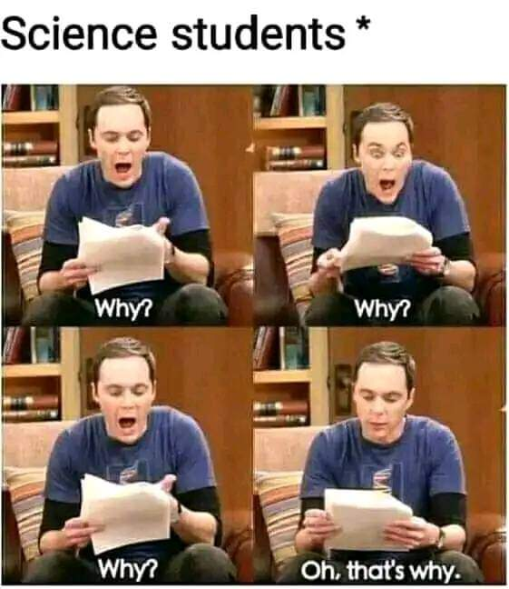
Science students trying to understand a concept
-
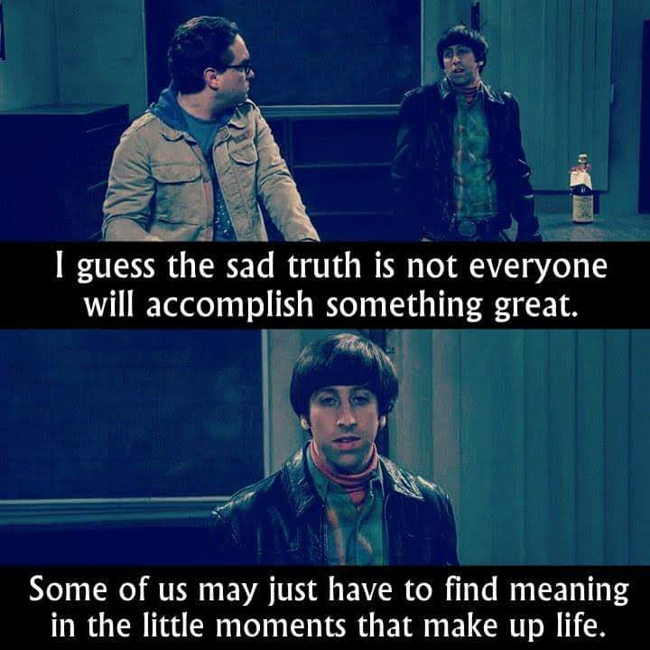
Big Bang Theory, Howard sad meme about accomplishments in life
-
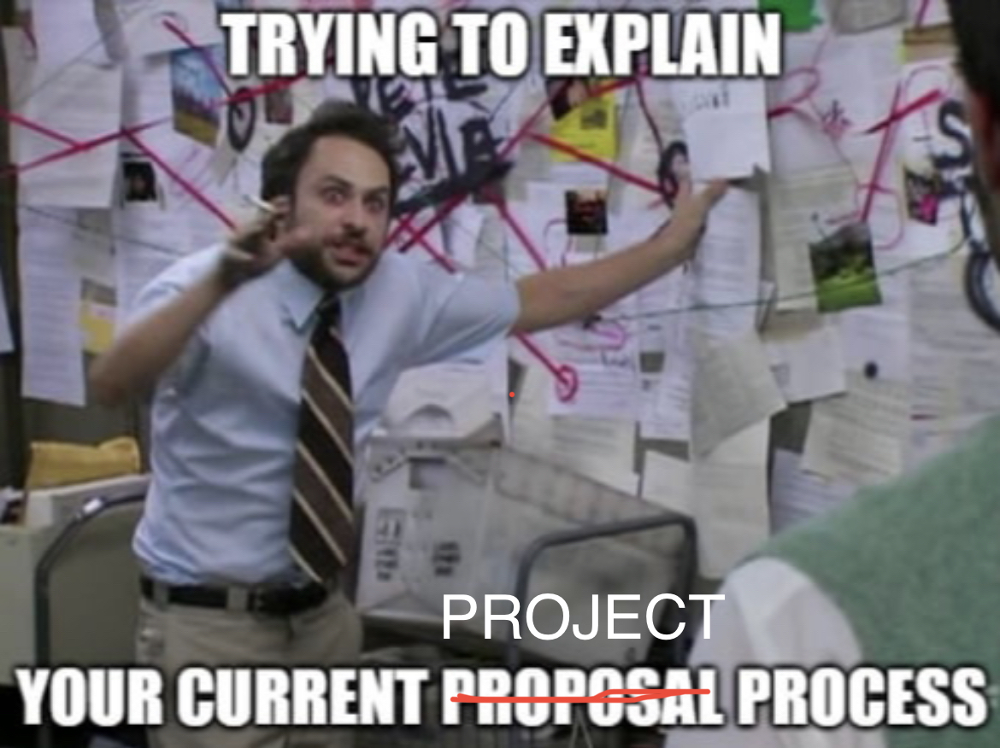
Student trying to explain project process
-
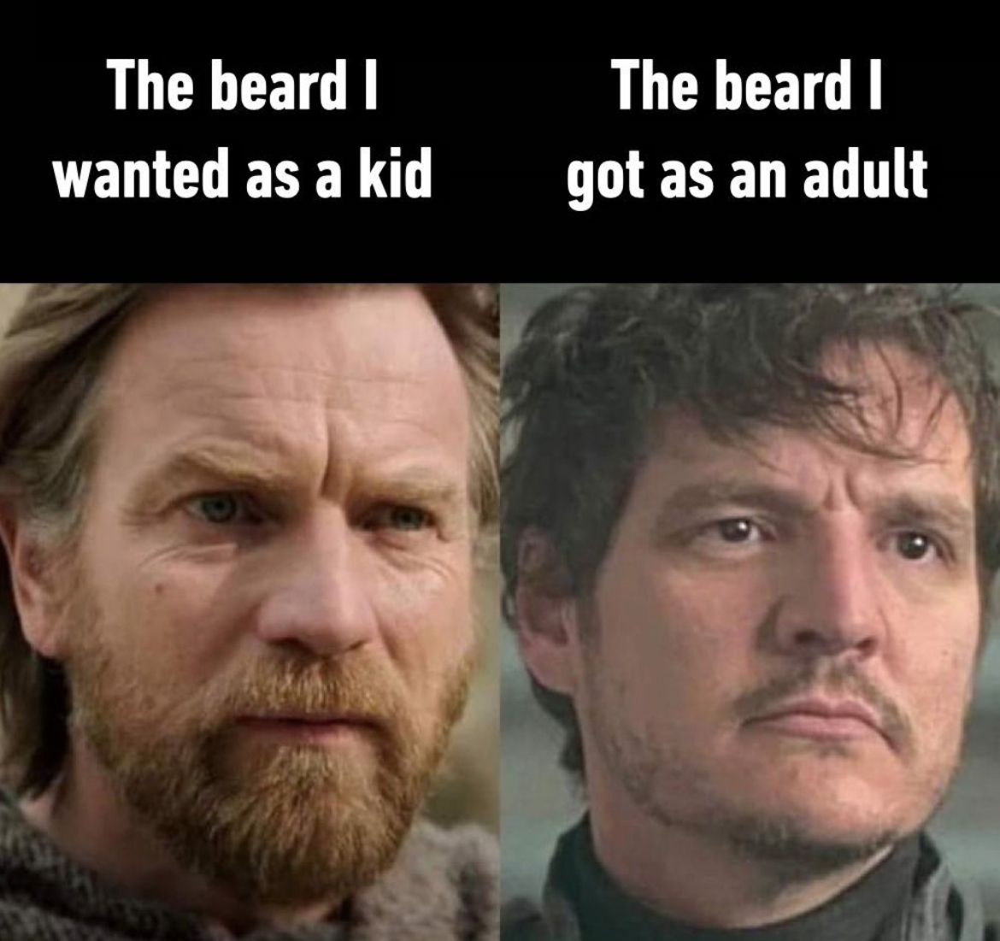
Beard I wanted vs What I have
-
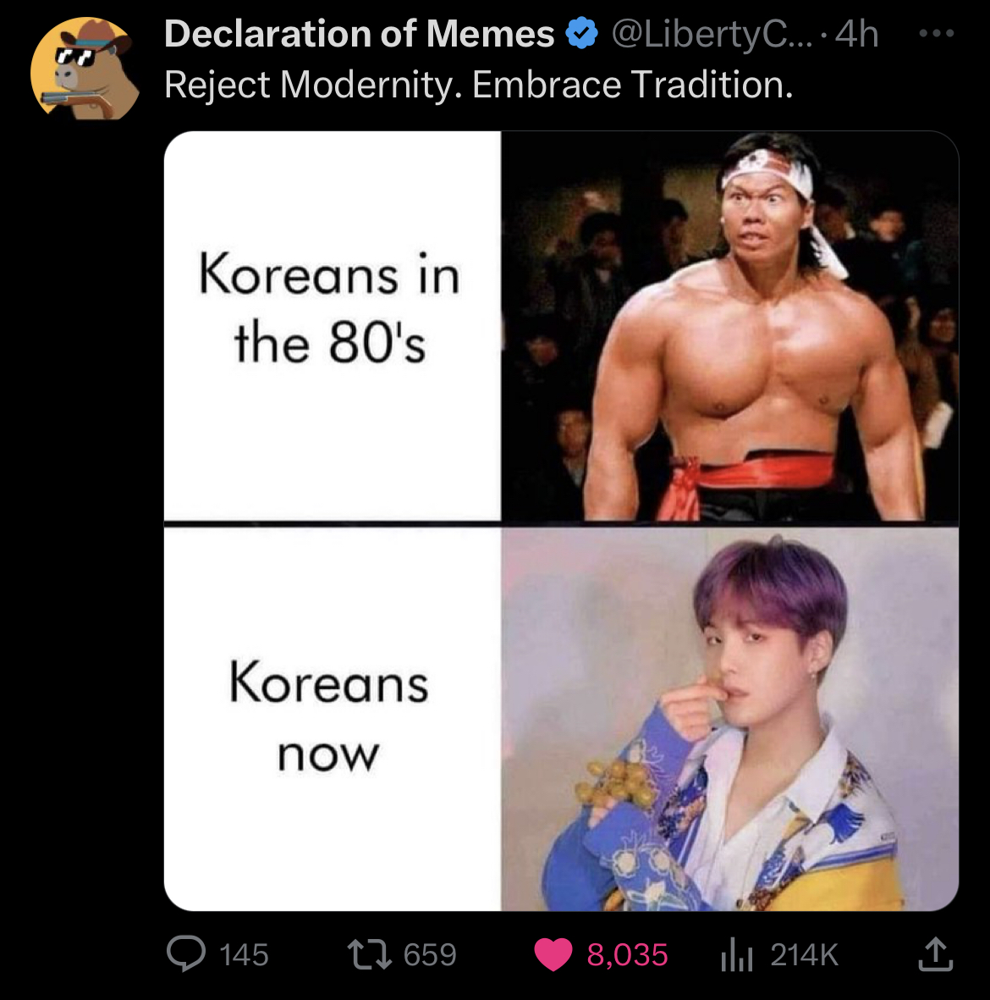
Koreans in the 80s vs Now
-
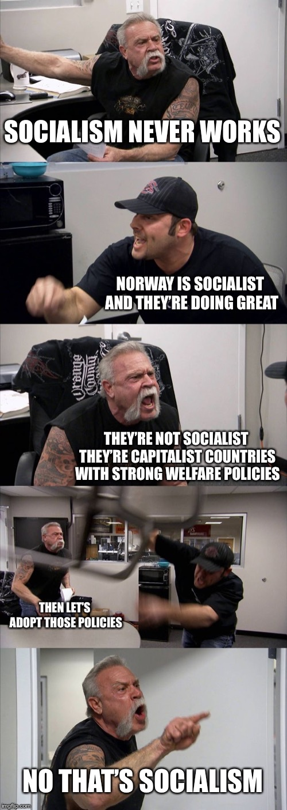
A meme about socialism
-
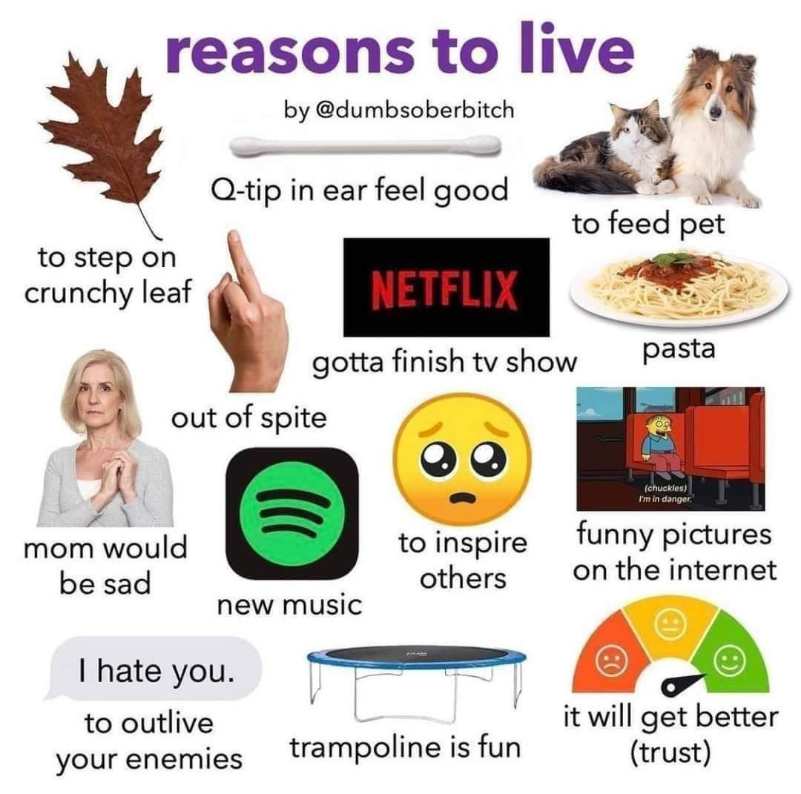
Reasons to live
-
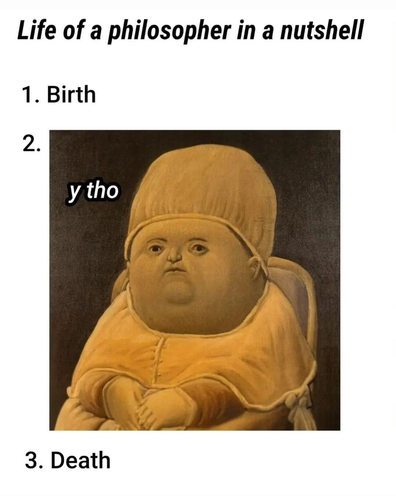
A philosopher's life
-
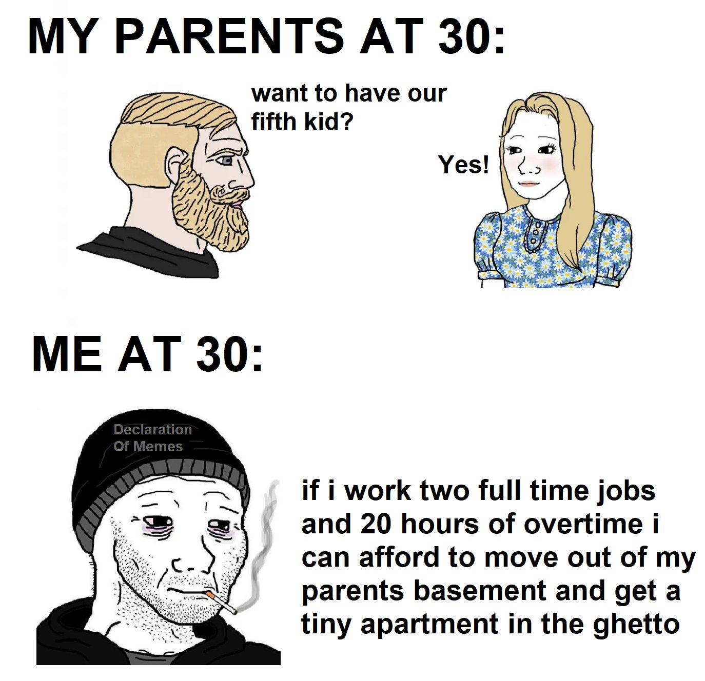
The current generation
-
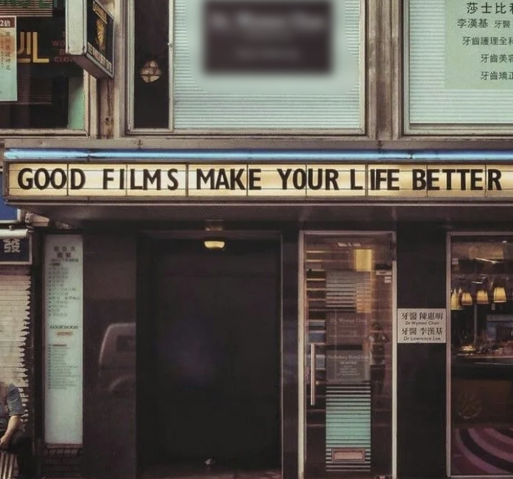
Good films make your life better
-
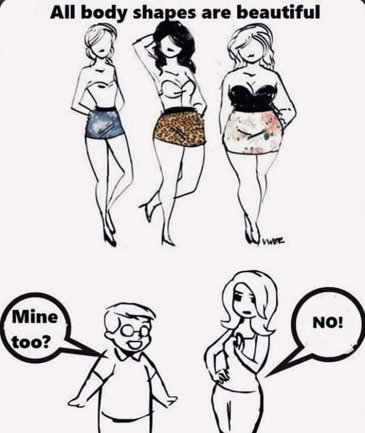
Body POSITIVITY is biased
-
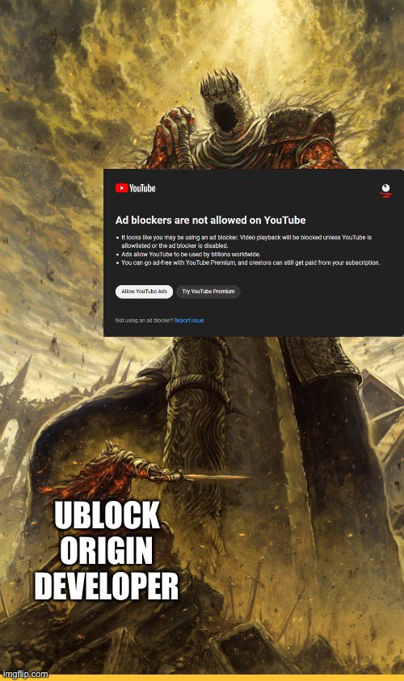
UBlock origin developer vs YouTube adblock blocker